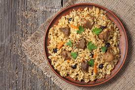

Pilau recipe

Pilau recipe
Ingredients
- Rice
- mixed spices
- swahili spices
- beef cubed
- tomatoes
- Garlic & ginger paste
- onions
- Chicken stalk
- Vegetable oil
Procedure
- Wash your rice and rinse off excess starch.
- Chop the onions and tomatoes.
- fry your onions til golden brown.
- Add your garlic & ginger paste and stir.
- Shape into a cylinder and leave on he heat for a moment.
- Add your tomatoes and fry into a paste then add your beef.
- Fry till beef is well cooked.
- Add an appropriate amount of water and bring to a boil.
- Add your rice and boil
- Serve with a salad or ovacado